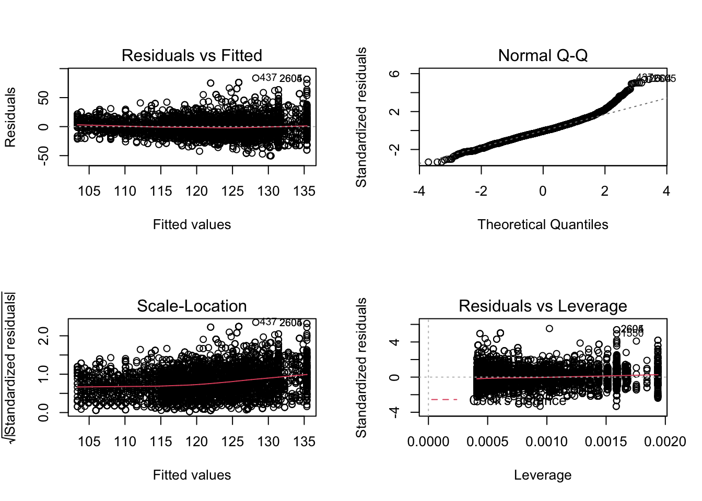
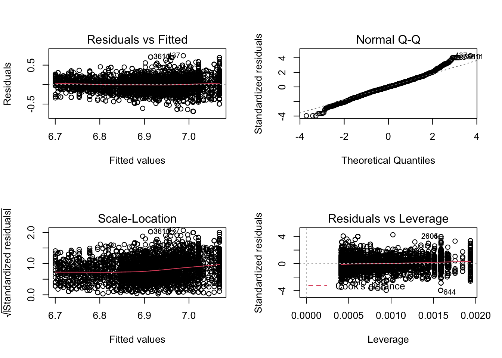
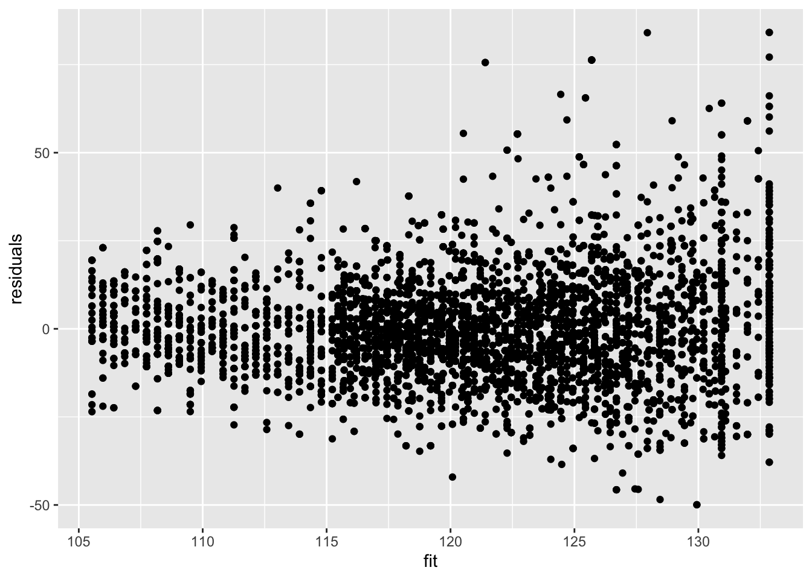
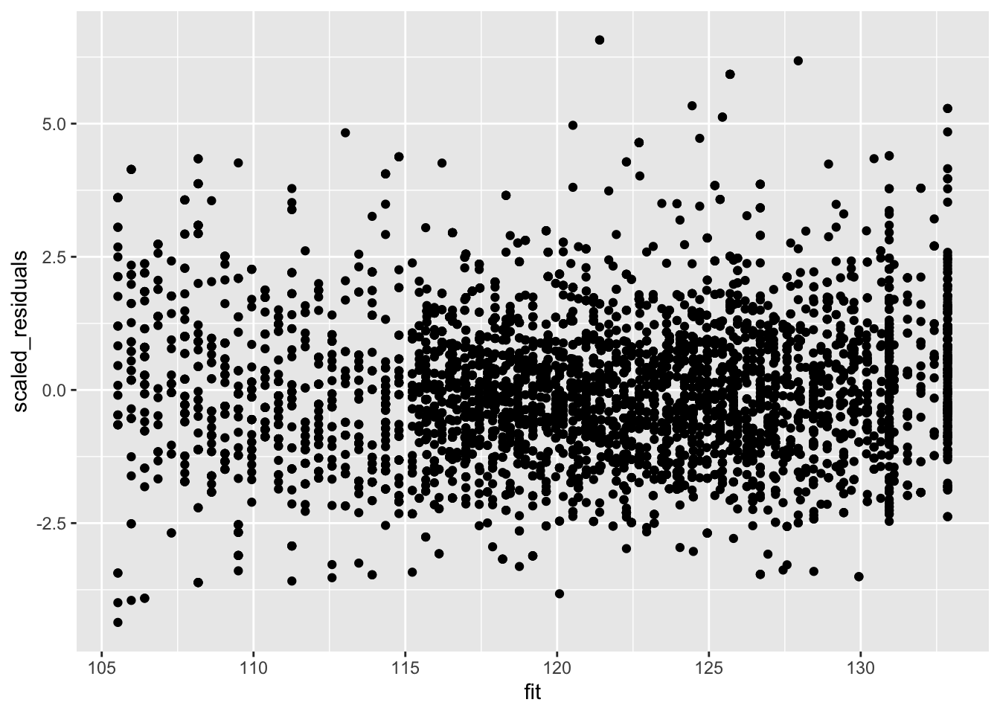

Hoofdstuk 11 Constrasten
- Bij meer complexe algemene lineaire modellen wenst men dikwijls meerdere hypothesen te toetsen.
- Bovendien vertalen de onderzoekshypotheses zich hierbij niet steeds in één parameter, maar in een lineaire combinatie van modelparameters.
- Een lineaire combinatie van modelparameters wordt ook een contrast genoemd.
11.1 NHANES voorbeeld
Stel dat de onderzoekers de associatie tussen de leeftijd en de bloeddruk wensen te bestuderen. Mogelijks is die associatie anders is bij mannen dan vrouwen.
De onderzoekers wensen de volgende onderzoeksvragen te beantwoorden:
- Is er een associatie tussen leeftijd en de bloeddruk bij vrouwen?
- Is er een associatie tussen leeftijd en de bloeddruk bij mannen?
- Is de associatie tussen leeftijd en de bloeddruk verschillend bij mannen dan bij vrouwen?
11.2 Model
We fitten een model op basis van de gemiddelde systolische bloeddruk (BPSysAve) in functie van de leeftijd, geslacht en een interactie tussen leeftijd en geslacht voor volwassen blanke subjecten uit de NHANES studie.
library(NHANES)
bpData <- NHANES %>%
filter(
Race1 =="White" &
Age >= 18 &
!is.na(BPSysAve)
)
mBp1 <- lm(BPSysAve ~ Age*Gender, bpData)
par(mfrow = c(2,2))
plot(mBp1)
Aannames van het model zijn niet voldaan!
- lineariteit lijkt ok
- heteroscedasticiteit
- Geen normaliteit: scheve verdeling met staart naar rechts.
- Grote dataset we kunnen steunen op de CLT
11.2.1 Transformatie
We fitten een model op basis van de log2 getransformeerde gemiddelde systolische bloeddruk (BPSysAve) in functie van de leeftijd, geslacht en een interactie tussen leeftijd en geslacht.
mBp2 <- lm(BPSysAve %>% log2 ~ Age*Gender, bpData)
par(mfrow = c(2,2))
plot(mBp2)
- De residuen tonen nog steeds heteroscedasticiteit.
11.2.2 Remediëren voor heteroscedasticiteit
- Als de plot van de residuen i.f.v. de geschatte waarden een toetervorm vertoont kan men toch correcte inferentie bekomen voor grote steekproeven als men de variantie van de response kan schatten.
- De inverse variantie voor elke observatie kan dan als gewicht worden gebruikt in de lm functie.
- We zullen daarom de standard deviatie modelleren in functie van het gemiddelde.
- Dat kan door de absolute waarde van de residuen te modelleren in functie van de gefitte waarden.
- We kunnen de variantie van Y schatten voor elke observatie d.m.v de kwadraten van de predicties voor alle data punten a.d.h.v model voor de standard deviatie.
- De inferentie blijft asymptotisch geldig.
mSd <- lm(mBp1$res %>% abs ~ mBp2$fitted)We schatten het model nu opnieuw:
mBp3 <- lm(BPSysAve ~ Age*Gender, bpData, w = 1/mSd$fitted^2)De residuen vertonen nog steeds heteroscedasticiteit.
data.frame(residuals = mBp3$residuals, fit = mBp3$fitted) %>%
ggplot(aes(fit,residuals)) +
geom_point()
Na het herschalen van de residuen a.d.h.v. de standard deviatie (vermenigvuldigen met vierkantswortel van het gewicht) zijn de geschaalde residuen homoscedastisch.
De parameters worden geschat door de gewogen kleinste kwadraten techniek.
\[ SSE = \sum\limits_{i=1}^n w_i e_i^2 \]
met \(w_i = 1/\hat \sigma^2_i\).
De gewogen regressie zal dus correct rekening houden met heteroscedasticiteit.
data.frame(scaled_residuals = mBp3$residuals/mSd$fitted, fit = mBp3$fitted) %>%
ggplot(aes(fit,scaled_residuals)) +
geom_point()
11.2.3 Besluitvorming
summary(mBp3)##
## Call:
## lm(formula = BPSysAve ~ Age * Gender, data = bpData, weights = 1/mSd$fitted^2)
##
## Weighted Residuals:
## Min 1Q Median 3Q Max
## -4.3642 -0.8494 -0.0940 0.7605 6.5701
##
## Coefficients:
## Estimate Std. Error t value Pr(>|t|)
## (Intercept) 97.59709 0.63501 153.693 < 2e-16 ***
## Age 0.44082 0.01505 29.294 < 2e-16 ***
## Gendermale 13.36724 1.09017 12.262 < 2e-16 ***
## Age:Gendermale -0.19115 0.02420 -7.899 3.45e-15 ***
## ---
## Signif. codes: 0 '***' 0.001 '**' 0.01 '*' 0.05 '.' 0.1 ' ' 1
##
## Residual standard error: 1.319 on 4828 degrees of freedom
## Multiple R-squared: 0.2182, Adjusted R-squared: 0.2178
## F-statistic: 449.3 on 3 and 4828 DF, p-value: < 2.2e-16De onderzoeksvragen vertalen zich in de volgende nullhypotheses:
- Associatie tussen bloeddruk en leeftijd bij de vrouwen?
\[ H_0: \beta_\text{Age} = 0 \text{ vs } H_1: \beta_\text{Age} \neq 0 \]
- Associatie tussen bloeddruk en leeftijd bij de mannen?
\[ H_0: \beta_\text{Age} + \beta_\text{Age:Gendermale} = 0 \text{ vs } H_1: \beta_\text{Age} + \beta_\text{Age:Gendermale} \neq 0 \]
- Is de Associatie tussen bloeddruk en leeftijd verschillend bij mannen en vrouwen?
\[H_0: \beta_\text{Age:Gendermale} = 0 \text{ vs } H_1: \beta_\text{Age:Gendermale} \neq 0 \]
- We kunnen onderzoeksvraag 1 en 3 onmiddelijk toetsen o.b.v. de model output.
- Onderzoeksvraag 2 is echter een lineaire combinatie van twee parameters.
- Bovendien is er ook het probleem dat we meerdere toetsen nodig hebben om de associaties te bestuderen.
We kunnen opnieuw gebruik maken van een Anova approach.
- We toetsen eerste de omnibus hypothese dat er geen associatie is tussen leeftijd en de bloeddruk.
\[ H_0: \beta_\text{Age} = \beta_\text{Age} + \beta_\text{Age:Gendermale} = \beta_\text{Age:Gendermale} = 0 \]
- Dat vereenvoudigt zich tot het toetsen dat
\[ H_0: \beta_\text{Age} = \beta_\text{Age:Gendermale} = 0 \]
- Wat we kunnen evalueren door twee modellen te vergelijken. Een model met enkel het gender effect en het volledige model met Gender, Age en de Gender x Age interactie.
- Als we deze hypothese kunnen verwerpen voeren we posthoc analyses uit voor elk van de 3 contrasten.
11.2.3.1 Omnibus test
mBp0 <- lm(BPSysAve ~ Gender, bpData, w = 1/mSd$fitted^2)
anova(mBp0, mBp3)## Analysis of Variance Table
##
## Model 1: BPSysAve ~ Gender
## Model 2: BPSysAve ~ Age * Gender
## Res.Df RSS Df Sum of Sq F Pr(>F)
## 1 4830 10200.5
## 2 4828 8404.5 2 1796 515.86 < 2.2e-16 ***
## ---
## Signif. codes: 0 '***' 0.001 '**' 0.01 '*' 0.05 '.' 0.1 ' ' 111.2.3.2 Posthoc testen
De posthoc testen kunnen we opnieuw uitvoeren a.d.h.v. het multcomp pakket.
library(multcomp)
bpPosthoc <- glht(mBp3, linfct=c(
"Age = 0",
"Age + Age:Gendermale = 0",
"Age:Gendermale = 0")
)
bpPosthoc %>% summary##
## Simultaneous Tests for General Linear Hypotheses
##
## Fit: lm(formula = BPSysAve ~ Age * Gender, data = bpData, weights = 1/mSd$fitted^2)
##
## Linear Hypotheses:
## Estimate Std. Error t value Pr(>|t|)
## Age == 0 0.44082 0.01505 29.294 <1e-10 ***
## Age + Age:Gendermale == 0 0.24967 0.01895 13.175 <1e-10 ***
## Age:Gendermale == 0 -0.19115 0.02420 -7.899 <1e-10 ***
## ---
## Signif. codes: 0 '***' 0.001 '**' 0.01 '*' 0.05 '.' 0.1 ' ' 1
## (Adjusted p values reported -- single-step method)bpPosthocBI <- bpPosthoc %>% confint
bpPosthocBI##
## Simultaneous Confidence Intervals
##
## Fit: lm(formula = BPSysAve ~ Age * Gender, data = bpData, weights = 1/mSd$fitted^2)
##
## Quantile = 2.3154
## 95% family-wise confidence level
##
##
## Linear Hypotheses:
## Estimate lwr upr
## Age == 0 0.4408 0.4060 0.4757
## Age + Age:Gendermale == 0 0.2497 0.2058 0.2936
## Age:Gendermale == 0 -0.1911 -0.2472 -0.1351Merk op dat de glht functie ons toelaat om de contrasten te definiëren door de nulhypotheses expliciet te formuleren in een karaktervector waarbij gebruik wordt gemaakt van de naam van de pararameters in het model.
11.2.3.3 Conclusie
We kunnen besluiten dat er een extreem significante associatie is tussen leeftijd en de bloeddruk (p << 0.001). De bloeddruk bij twee vrouwen die in leeftijd verschillen is gemiddeld 0.44 mm Hg hoger per jaar leeftijdsverschil bij de oudste vrouw en dat verschil is extreem significant (p << 0.001, 95% BI [0.41, 0.48]. De bloeddruk bij mannen die in leeftijd verschillen is gemiddeld 0.25 mm Hg hoger per jaar leeftijdsverschil bij de oudere man. (p << 0.001, 95% BI [0.21, 0.29]. Het gemiddelde bloeddrukverschil tussen personen in leeftijd verschillen is gemiddeld -0.19 mm Hg/jaar hoger bij vrouwen dan mannen (p << 0.001, 95% BI [-0.25, -0.14]).